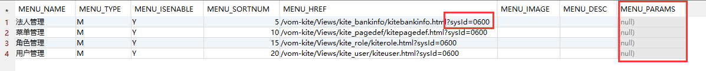

更新日志
-
-
-
1.0.4
2018-03-15
- U修改上传下载文件规则，支持更多情况。废弃Download、Upload目录，新增File（归档）、Temp（临时）目录
- U升级kite-all.1.0.0.jar到版本1.0.1，主要修改文件服务器功能，如未使用可直接升级。以后一直维护1.0.1版（升级方法：修改build.gradle的配置即可）
- U修改代码生成器模板，删除几行冗余代码
- A新增新版法人管理页面
- A新增新版用户管理页面
- A新增新版角色管理页面
- A新增新版菜单管理页面
- U更新新版维护页面方法如下：
- 1. 更新vom-kite工程
- 2. 手动改表KITE_PAGEDEF中对应的配置页面路径，如下图：
- 
- 可以赋值下面代码到MENU_HREF字段，然后改系统ID即可：
- /vom-kite/Views/kite_bankinfo/kitebankinfo.html?sysId=0600
- /vom-kite/Views/kite_pagedef/kitepagedef.html?sysId=0600
- /vom-kite/Views/kite_role/kiterole.html?sysId=0600
- /vom-kite/Views/kite_user/kiteuser.html?sysId=0600
- 注意：MENU_HREF字段中页面参数sysId要改成对应系统的ID，MENU_PARAMES字段留空
-
1.0.3
2018-03-10
- U修改上传文件规则，现在按时间戳命名上传文件了（更新kite-all-1.0.0.jar即可）
- U优化代码查看功能
- U首页脚注现在可以删除了
- A新增TreeGrid组件
- A新增组件全局搜索功能
- A新增基础组件链接
- A新增d3图表及相关插件链接
- A新增项目构建功能，可直接下载新项目工程，并提供导入eclipse的步骤说明
- A新增环境搭建步骤说明，并提供标准版Tomcat容器下载
- A新增环境更新步骤说明
- A新增表达式组件
- 下载文件：v1.0.3.zip
-
1.0.2
2018-03-05
- U修改顶部一级菜单样式，由左侧小图标改为居中大图标
- A新增树列表示例，依赖ztree
- A新增左右布局示例
- A新增上传下载示例
- A新增导航标签示例
- 注意：
- /Plugins/Admin下的kite.css不要改动，以便可以覆盖更新。各个应用如需要配置全局css，统一加到layuipack.css中
- 现在可以点击右下角 “查看代码” 来查看对应页面的代码了
- 如需要升级到此版本，请下载更新包，按照说明替换文件即可
- 下载文件：v1.0.2.zip
-
1.0.1
2018-01-01
升级ui主框架到最新版本，统一使用layui布局，统一使用gradle管理项目依赖
-